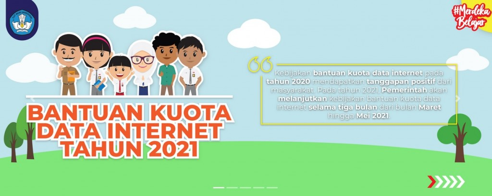
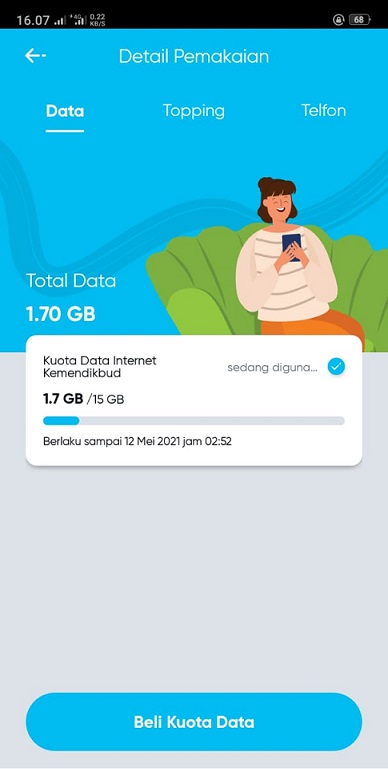
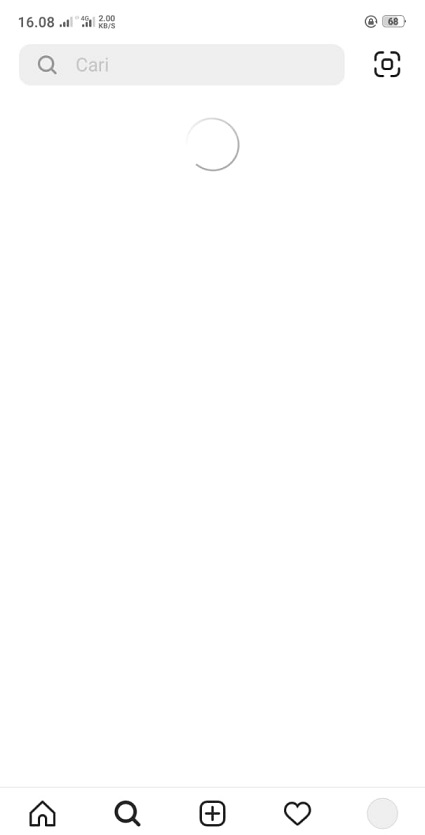
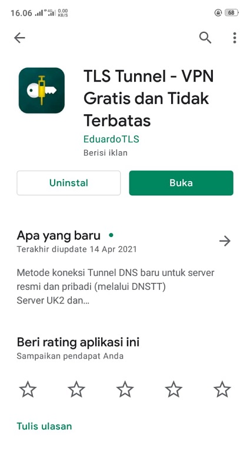
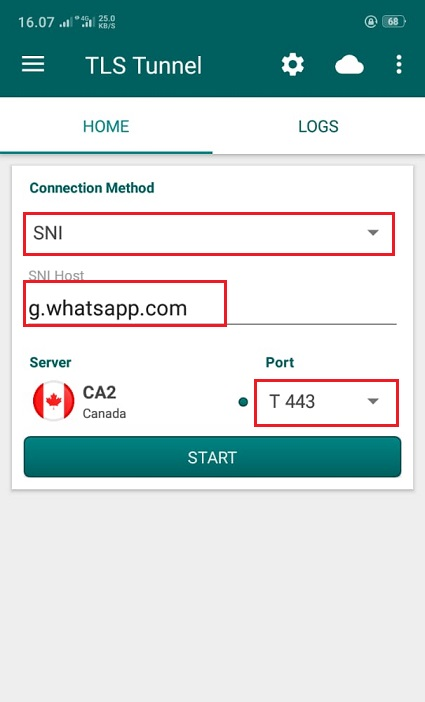
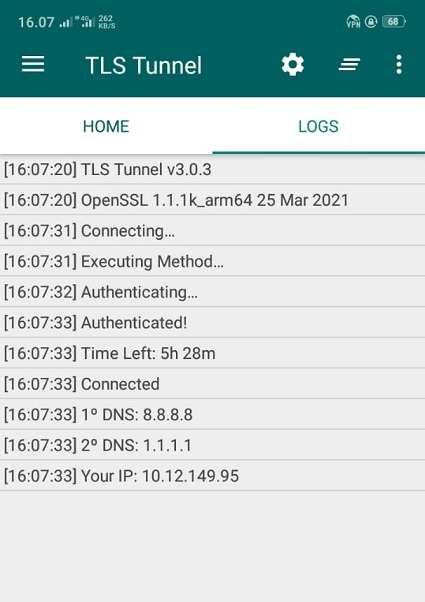
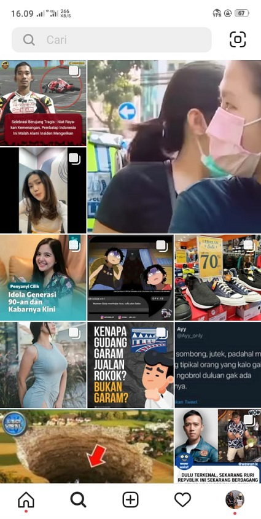

Cara Ubah Kuota Kemendikbud Menjadi Kuota Reguler

Pada masa pandemi ini pembelajaran di Indonesia menjadi sistem daring atau belajar dari rumah.
Pada pembelajaran daring ini banyak pelajar yang terbebani oleh mahalnya harga kuota untuk belajar. Oleh karena itu pemerintah Indonesia membagikan subsidi Kuota kepada para Pelajar dan Mahasiswa.
Tetapi seperti yang kita tahu kuota tersebut dibatasi aksesnya untuk media sosial. Oleh karena itu kami akan membagikan tutorial cara merubah kuota Kemendikbud menjadi kuota reguler sehingga kuota tersebut bisa untuk mengakses media sosial seperti Instagram, Twitter, TikTok dll.
Berikut cara merubah kuota Kemendikbud menjadi kuota reguler :
- Baik, hal pertama yang perlu kita lakukan adalah mengecek terlebih dahulu kuota Kemendikbud kita. Pastikan kamu tidak mempunyai pulsa dan tidak mempunyai kuota reguler, karena jika mempunyai kuota reguler maka kuota reguler anda akan tersedot. Disini saya menggunakan provider By-U.
- Pastikan anda tidak bisa mengakses sosial media seperti Instagram
- Selanjutnya install TLS Tunnel di PlayStore atau download di link berikut
- Setelah aplikasi TLS Tunnel selesai di-install, buka aplikasinya dan setting aplikasi sesuai gambar dibawah ini. Untuk Server silahkan pilih sesuai kondisi, saya sarankan pilih server dengan kondisi sinyal warna hijau.
- Setelah itu tekan tombol Start dan lihat bagian log, jika sudah terhubung dengan alamat IP maka telah berhasil dan kuota anda sudah bisa mengakses semua sosial media seperti Instagram, Twitter dll.
- Kuota sudah bisa digunakan untuk membuka sosial media, sperti contoh saya bisa mengakses Instagram






Sekian tutorial cara merubah kuota Kemendikbud menjadi kuota reguler, semoga mambantu.